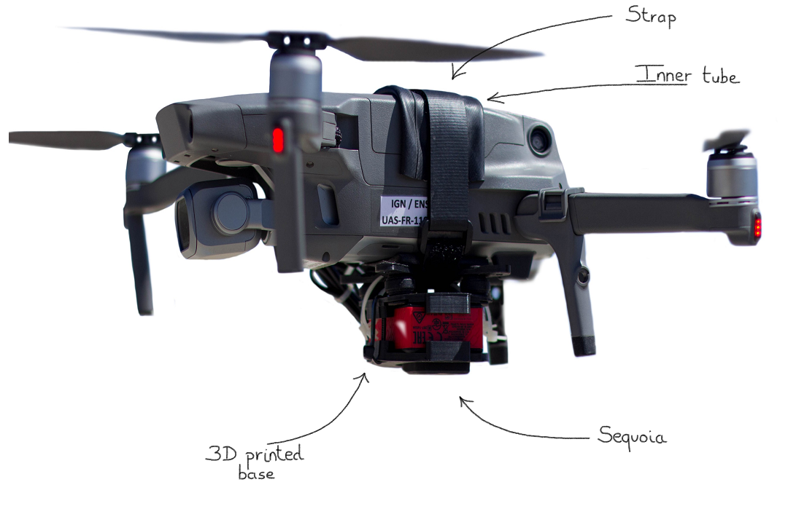
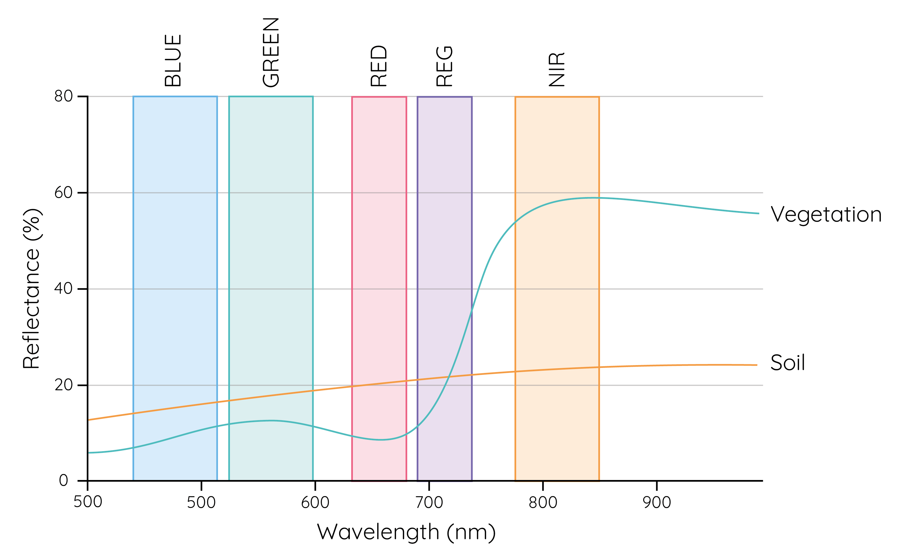
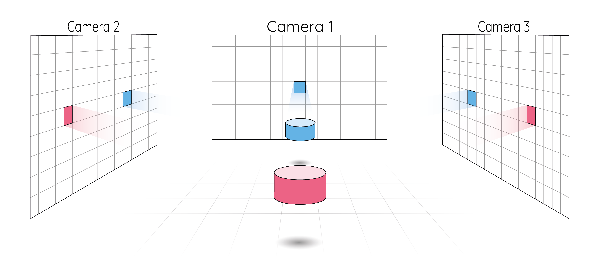
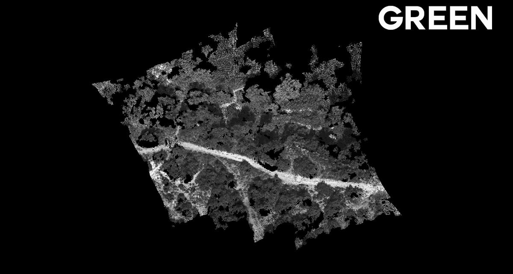
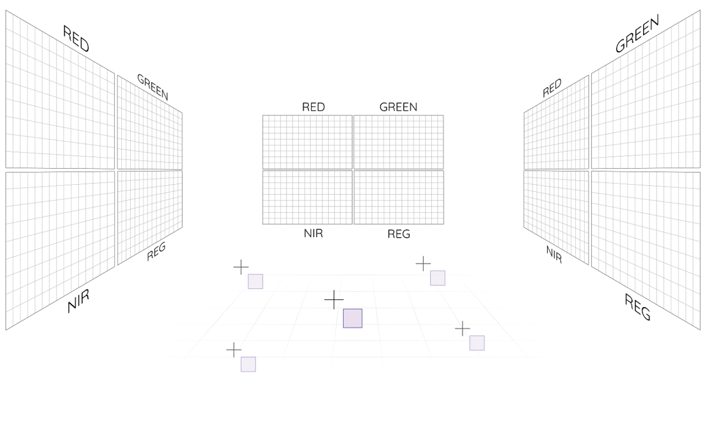

Context
MicMac is a popular software for photogrammetry, used by researchers and made at the IGN x ENSG. However, this tool has some limitations.
Because MicMac works only for RGB (or maximum 3-channels images), Colorply was created and handles as many channels as you want and complete an existing 3D cloud of points from multispectral images.
Before exploiting our camera, we calibrated each sensors and evaluated their distorison.
Drone
Set-up
The camera was attached to a civil drone while we flew over high altitude forest in high provence. We used a 3D printed base to fix the camera under the drone, and strap it all together.
Flight
We used Flightio to set-up our flight and ensure that each pictures overlap at least 60% - a photogrammetry constraint.
Calibration
Attachement of the sensors
This step is essential for the rest of our project, it allows the attachment of our 5 sensors, i.e. find the attachment vectors and the rotation matrices between the 5 Sequoia
sensors - in meters.
We took several photos on all channels, and used MicMac to orientate the images in 3D - we used geo-referenced targets to reference the images. Then, we were able to see and
measure the different attachment vectors and rotation matrices from one image to another.
| Sensor | Distance (mm) |
|---|---|
| GRE - RED | 14.0 |
| NIR- REG | 14.9 |
| NIR - RED | 15.0 |
| GRE - REG | 14.4 |
| Diag GRE - NIR | 18.7 |
| Diag RED - REG | 22.2 |
The rotation matrices were really close to identity, meaning that all sensors are pointing in the same direction. For a better accuracy in our further work, we used these results as a fix base, i.e. we re-defined the distances and rotations between sensors with the ones above.
Wavelength influence
The sequoia camera has 4 channels sensitive to different wavelengths:
| Sensor | Wavelength (nm) |
|---|---|
| GREEN | 550 |
| RED | 660 |
| REG | 735 |
| NIR | 790 |
Let's have a reminder of the wavelength reflectance of soil and vegetation:
We can clearly see that in visible wavelength, soil and vegetation have similar reflectance. But the REG and NIR windows present a clear separation between these two features.
The Sequoia sensors do not receive the same light information from an object, an object does not reflect uniformly across all wavelengths. For example a tree returns more in the green than in the red. The goal here was to quantify and understand the impact of different image composition before diving into more complex photogrammetry application.
We evaluated each sensors regarding their photogrammetric rendering on four different scenes: rocks, forest, urban, mix. As each scenes have different composition (vegetation, roofs, rocks...), the sensors will not register the same information.
Multispectral photogrammetry
Epipolar geometry
Introduction
Epipolar geometry is the geometry of stereo vision. Two cameras looking toward the same scene in different positions can infer their relative position and orientation and thus, construct a new scene from 2D to 3D.
MicMac
MicMac is powerfull tool when it comes to photogrammetry computation. It offers a great freedom on image manipulation, usefull for research.
We sampled an area of forest and mix vegetation by drone, and generated cloud of points - with MicMac and the attachment vectors previously determined. As we used four sensors (GRE, RED, REG, NIR), we generated four clouds of points.
Mix vegetation, area located in Provence, France.
Our main objective was to merge these four models into one with four (or more) wavelength attributes. Note that even though these models share a global structure all points have a unique position, so we couldn't naively 'merge' the points together. We wanted a photogrammetric solution.
Image Formula
Definition
The image formula is used to switch from image to ground coordinates system. For a point \(m\) in the image, its representation \(M\) in the ground system is linked to the orientation \(R\) of the image, its optical center \(S\) and focal length \(F\). $$ m = F - \frac{k^TFR(M - S)}{k^TR(M - S)} $$
import numpy as np
def image_formula(F, M, R, S):
"""Computes the image formula for the point M without distorsion.
Parameters
----------
F : numpy.ndarray
Position of the autocollimation point in the image coordinate system.
M : numpy.ndarray
Position of the point in ground space coordinates.
R : numpy.ndarray
Rotation matrix representing the orientation of the image coordinate system
in the ground space coordinate system.
S : numpy.ndarray
Position of the autocollimation point in the ground space coordinate system.
Returns
-------
numpy.ndarray
Image coordinates of M projected.
"""
kT = np.array([0, 0, 1])
R_inv = np.linalg.inv(R)
top = kT @ F @ R_inv @ (M - S)
bottom = kT @ R_inv @ (M - S)
return F - top/bottom
Distorsion correction
As the different photos were captured by a camera sensor, we corrected the distorsion artefacts \(dr\) by applying a radial model: $$ dr = ar^3 + br^5 + cr^7 $$ were \(r\) is
te distance \(d(PPS, m)\),
\(a, b, c\) are the distorsion coefficients - computed with a MSE algorithm.
def radial_std(m_image, pps, a, b, c):
r"""Corrects the postion of the point according
to the standard radial distorsion model.
.. note::
We use Horner's method to evaluate :math:`ar^2 + br^4 + cr^6`
Parameters
----------
m_image : numpy.ndarray
Position of the projected point in pixel.
pps : numpy.ndarray
Position of the point of 0 distorsion in the radial model.
a : float
3rd order coefficient of the distorsion polynomial.
b : float
5th order coefficient of the distorsion polynomial.
c : float
7th order coefficient of the distorsion polynomial.
Returns
-------
numpy.ndarray
Corrected point position.
"""
r = np.linalg.norm(m_image - pps)
rsquared= r * r
# Horner's method
poly = c
poly = poly * rsquared + b
poly = poly * rsquared + a
poly = poly * rsquared
# Correction vector
dr = poly * (m_image - pps)
return m_image + dr
This can also be done in one function:
def image_formula_corrected(F, M, R, S, pps, a, b, c):
"""Compute the image formula for the point M
with distorsion.
Parameters
----------
F : numpy.ndarray
Position of the autocollimation point in the image coordinate system.
M : numpy.ndarray
Position of the point in real space coordinates.
R : numpy.ndarray
Rotation matrix representing the orientation of the image coordinate system in the real space coordinate system.
S : numpy.ndarray
Position of the autocollimation point in the real space coordinate system.
pps : numpy.ndarray
Position of the point of 0 distorsion ine the radial_std model.
a : float
3rd order coefficient of the distorsion polynomial.
b : float
5th order coefficient of the distorsion polynomial.
c : float
7th order coefficient of the distorsion polynomial.
Returns
-------
numpy.ndarray
Corrected point position.
"""
return radial_std(image_formula(F, M, R, S), pps, a, b, c)
Multispectral cloud of points
To generate our desired model, we first generated a single cloud of points using the REG channel - best band for photogrammetry renderings. Then, we projected every points with the image formula into the three remaining set of pictures i.e. GREEN, RED, NIR. The corresponding radiometry was then stored into the respective 3D point - that's where the model became multispectral.

def radiometry_projection(M, images_loaded, calibration):
"""This function adds a new channel to a point M, computed from the loaded images.
Therefore, the images should be calibrated in the same reference of the point M.
Usually, the 3D point M is part of a cloud points.
Parameters
----------
M : numpy.ndarray
Position of the point in real space coordinates.
images_loaded : list of Images
List of the image loaded.
These images need to be referenced in the same system as the point M.
Usually with MicMac calibrate all the images together.
calibration : dict
Dictionary containing the camera calibration global parameters.
Returns
-------
float
Value of the new channel.
"""
# Load once the camera calibration
size = calibration['size']
F = calibration['F']
pps = calibration['PPS']
a = calibration['cdist']['a']
b = calibration['cdist']['b']
c = calibration['cdist']['c']
n = len(images_loaded)
L = []
# Run all images on the scene
for image in images_loaded:
# Get the orientation and data from the image
data = image.data
R = image.R
S = image.S
# Projection
m = image_formula_corrected(F, M, R, S, pps, a, b, c)
mx = int(np.round(m[0]))
my = int(np.round(m[1]))
# Test if the projected point is visible from the images
if (0 < mx < size[0]) and (0 < my < size[1]):
L.append(int(data[my, mx]))
return np.mean(L)
Classification
Random Forest
After generating our 4-bands 3D models, we classified four types of vegetation: terrain, grass, shrub, oak. We scored a global accuracy of 92.07% on the previous area.
| Terrain | Oak | Shrub | Grass | |
|---|---|---|---|---|
| Terrain | 410 | 0 | 0 | 16 |
| Oak | 0 | 260 | 10 | 0 |
| Shrub | 0 | 0 | 137 | 16 |
| Grass | 23 | 0 | 11 | 192 |


| Color | Terrain | Oak | Shrub | Grass |
|---|---|---|---|---|
| Vegetation | WHITE | GREEN | BLUE | RED |
Outcomes
This project have been the occassion to work on photogrammetry for remote sensing purposes. As my interest in imagery is growing, I particularly appreciate working on it, and I will keep updating the repository on github.